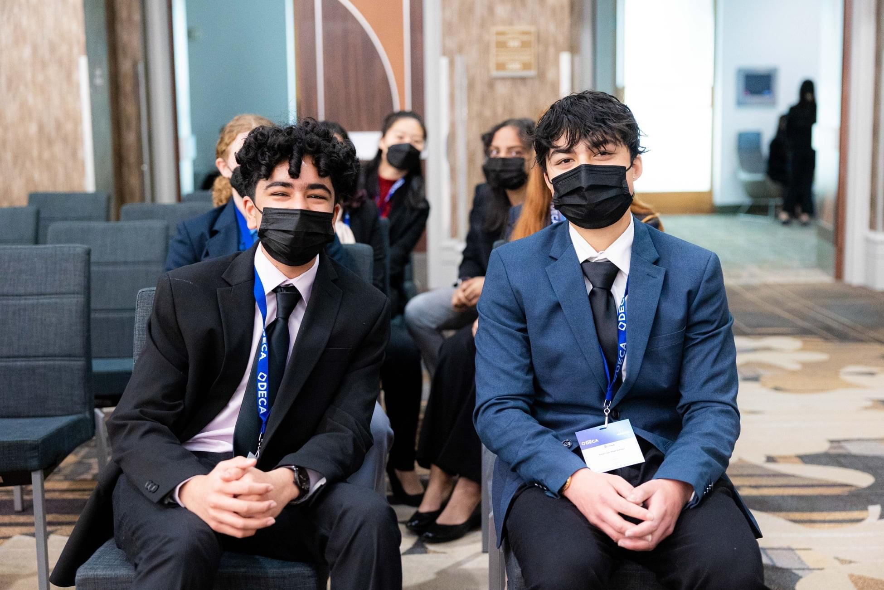
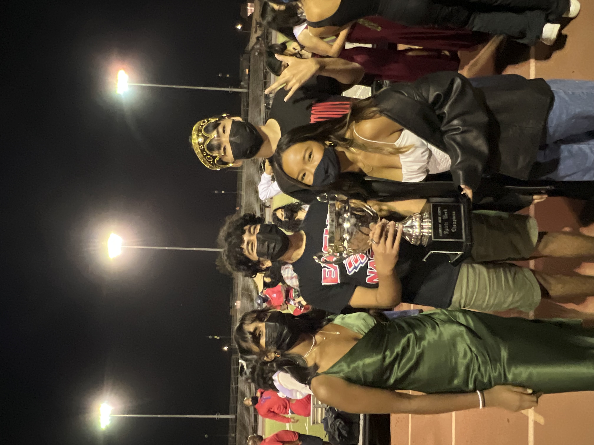
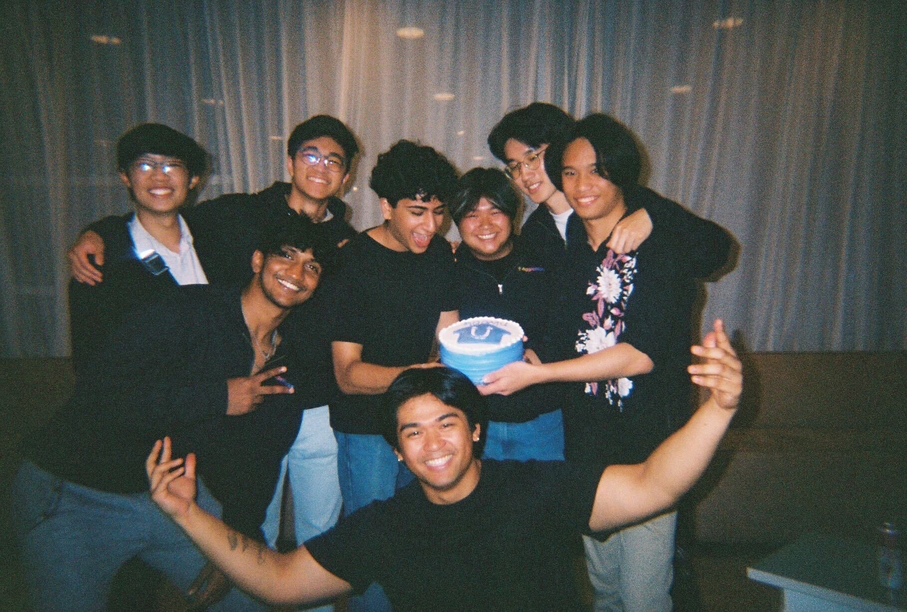
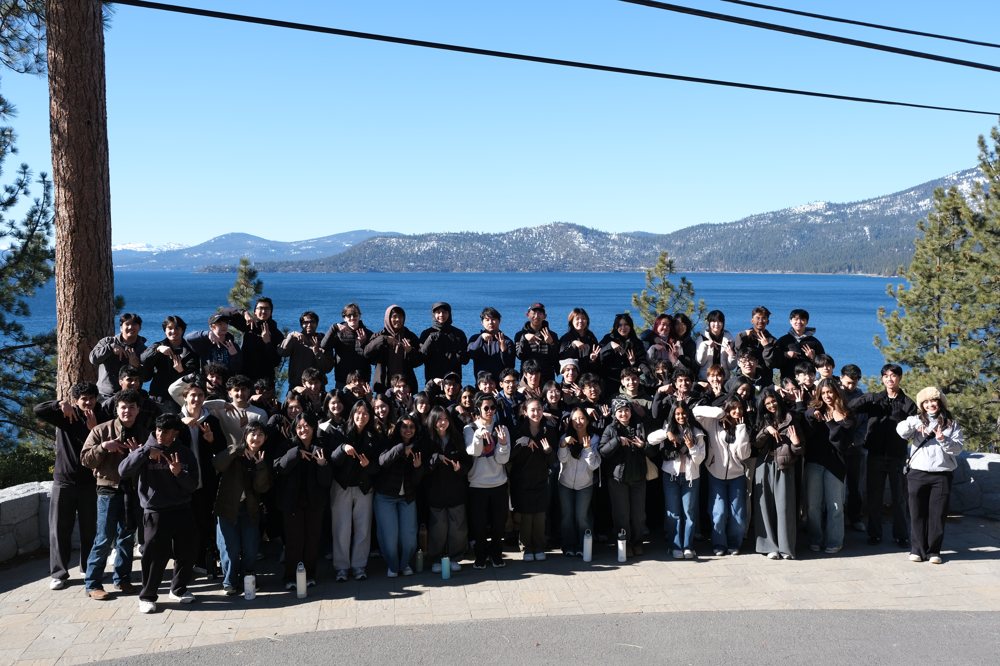
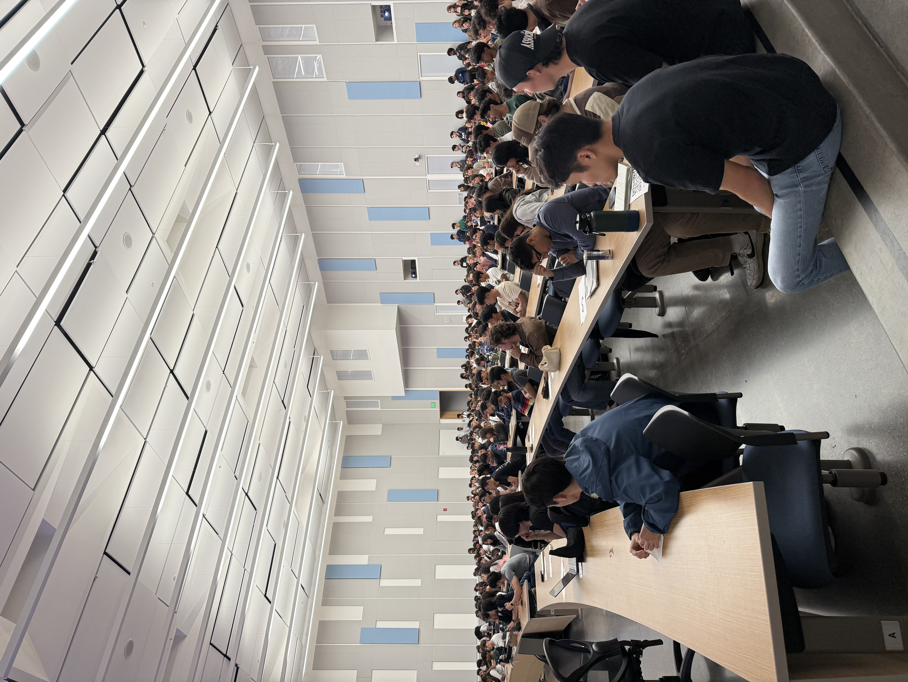
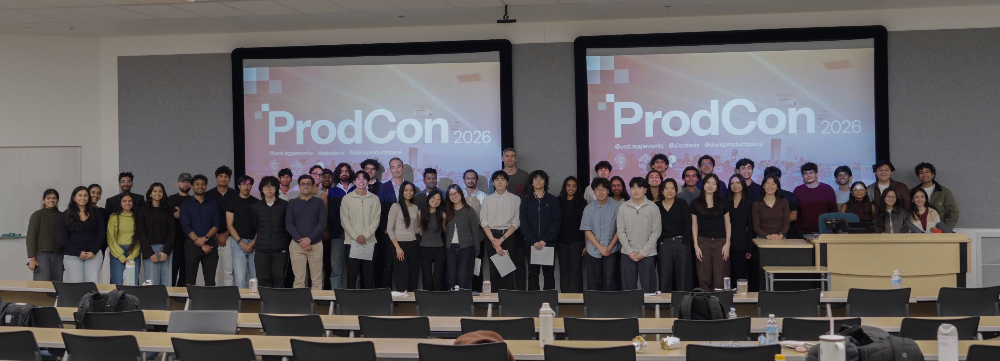

I’m a software engineer currently contracting at Arpio. My work sits between engineering, product, and design, with close attention to how a product feels and the problem it solves. I graduated from UC Davis in June 2026 with a degree in Computer Science.
I’ve always been talkative and socially driven. My parents love to tell the story of me at one of my brother’s swim classes. 10 minutes in, they lost track of me. After a few minutes of panicked searching, they eventually found me talking to kids I had never met, Hot Wheels in hand. That instinct to start a conversation has stayed with me since.
In high school, I found more places to put that energy. I joined student council, mock trial, DECA, film club, and Boy Scouts. Serving as class senator for three years was my first fulfilling leadership experience. Years later, when I found myself leading a much larger student organization, that part felt familiar.


After graduating high school, I entered UC Davis as an Economics major because I was interested in human behavior. I liked the questions it asked, but the emphasis on theory felt removed from the people behind them. I wanted a way to stay close to those people and make something in response to what I learned.
Product management gave me that. I joined AggieWorks as a Product Manager and switched my major to Cognitive Science. I was still thinking about behavior, but now I could connect it to a real product, a real decision, and eventually a real person using what we made.
But the closer I got to building, the more I wanted to understand the technical work itself. That summer, I worked as a software engineer at Yantra (acq. by Riveron), building supply-chain dashboards for a few of their clients.
By my second year, I had gone all in on RoomU (roommate-matching app) and switched to Computer Science. We launched the product and put it in front of real users. We listened to them and kept iterating on the product in response. I started to understand how important the user voice was in engineering and product decisions.

In my third year, I became VP of Product and handed RoomU to other members. My attention moved from refining one product to thinking about how the whole organization learned to build. I wanted every team to make more considered product decisions and ship more refined products.
I cared about the quality of what we shipped, but the people building it mattered just as much. AggieWorks had given me room to learn, and I wanted other students to have that room too.
As President, I focused more directly on the experience of the people inside AggieWorks. We invested in socials, retreats, and professional-development sessions alongside the internal work that kept the organization running. I also helped new products move from 0 to 1 while helping established products gain traction through data-driven product decisions and growth marketing initiatives.
Seeing other members find ownership and fulfillment in their work became more gratifying than succeeding on my own. It widened my idea of what it meant to build something.

We also created larger spaces for the community around us, including the UC Davis Tech Mixer and ProdCon. When one of our products hit PostHog’s rate limit, I cold emailed them because we were trying to avoid paying for the service. They responded by giving us access to their startup plan. That conversation grew into a partnership and PostHog’s first university event. A few months later, they used the same playbook for their first student ambassador program.


At Arpio, I built and shipped an interactive tours page and a pricing tool that helped drive lead acquisition and conversion. My enterprise work introduced a different set of constraints. Downtime, competing priorities, and code quality could carry immediate consequences. The work made me more deliberate about what needed to work now and what we could improve.
For a long time, I thought software had to feel perfect before it launched. I still care deeply about how a product feels, but I no longer think software needs to be perfect before it launches. I try to ship useful core functionality, put it in front of people, and improve it from what they do and say.
To me, a real problem is one that real people are already experiencing. Their voice belongs inside the engineering and product process. That does not remove the need for judgment. It gives that judgment something concrete to answer to.
My definition of building has widened along the way. It includes writing code, but it also includes listening carefully, choosing what matters, and creating an environment where other people can do good work. The product and the team both improve when the people involved have a real voice.
That wider definition has also clarified what I want from the work ahead. I want to own a meaningful part of what reaches people and understand the systems underneath it deeply enough to make careful decisions.